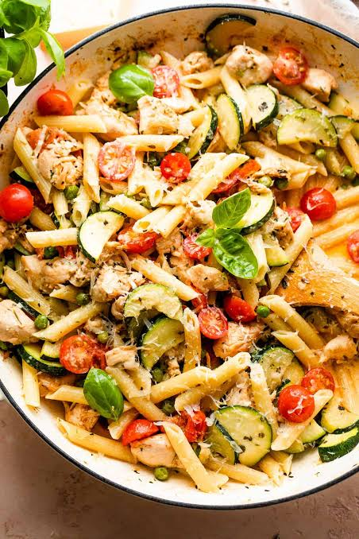

Pasta with Chicken and Vegetables
Ingredients
- 1 Chicken Breast
- 1 Pinch of Salt
- 2 Tablespoons of Cornstarch
- Vegetable Oil
- ½ Cabbage
- ½ Red Bell Pepper
- ½ Green Bell Pepper
- ½ Yellow Bell Pepper
- 1 Carrot
- 3 Cloves of Garlic
- 1 Onion
- 1 Teaspoon of Salt
- 1 Pinch of Black Pepper
- 3 Tablespoons of Soy Sauce
Pasta
- 1 Teaspoon of Salt
- 250g of Spaghetti Pasta
Modo de Fazer (How to Make)
Start by cutting the chicken breast into thick slices then into thin strips.Transfer to a medium bowl, add a pinch of salt, a pinch of black pepper, the cornstarch and mix until combined.In a skillet over medium to low heat, add a drizzle of vegetable oil, the chicken strips we prepared and let them fry on both sides until golden brown. Remove them from the skillet and set aside.Then, chop the cabbage and the bell peppers into thin strips and set aside.Cut the carrot into slices and set aside. In a large pan over medium to low heat, add a drizzle of vegetable oil. Add the minced garlic cloves, the onion cut into strips and sauté until slightly golden brown. Then, add the chopped peppers, the carrot, the cabbage and stir well. Season with the salt, a pinch of black pepper and stir again until combined. Add the soy sauce, stir and set aside. In a pan filled with hot water, add the salt, the spaghetti pasta, stir and cook for 8 minutes. After this time has passed, drain all the water and add the spaghetti to the pan with the vegetables. Add the chicken we prepared earlier and stir everything very well until combined. Serve.